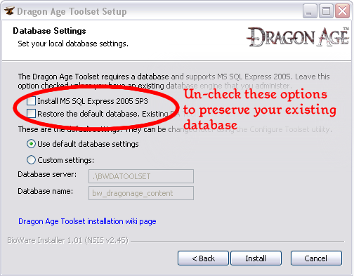

Database migration
{kind=link}
See Backing up your database for instructions on how to back up your database before proceeding.
Contents
Migrating from verison 1.00 to version 1.01
Unfortunately there have been changes in the builder-to-builder format of the toolset in the most recent version (to fix the root cause of the Plot GUID bug) so it will not be possible to migrate old content directly to the new toolset version using a builder to builder export/import. Instead, there's a particular sequence of steps you'll need to follow to bring forward any content you want to preserve while also gaining the corrected core resources in the new database that comes with the installer.
Step 1 - Install version 1.01 of the toolset but keep your old database
{kind=link}

This will give you the new toolset but keep your old database, with all the content you want to preserve still stored within it.
Step 2 - Builder-to-builder save your work
Now that you've got your resources accessible in a new version of the toolset that uses the new builder-to-builder file format, you can save your work in a DADBDATA file that the new version of the toolset will be able to understand. See the builder to builder page for information on how to select and save the resources you want to keep. Don't save the old core resources, and especially not the old core plots, as these resources are updated in the new database you'll be installing in step 3.
Step 3 - Replace the old database with the new one
The toolset installer will have placed a backup copy of the new database in the following location:
C:\Program Files\Dragon Age\tools\dbbak\bw_dragonage_content.bak
or wherever your Dragon Age game was installed, if not Program Files. This database has corrected core plot GUIDs in it, and installing this backup will resolve the Plot GUID bug. For information on how to restore this database backup, see Backing up your database, below.
Step 4 - Builder-to-builder load your work
Now that you have the corrected core resources in your database, recreate the modules that you saved your work from and use builder to builder to load your resources back into them.
Will we need to do this rigamarole each time the toolset is updated?
The process above is due to an unfortunate combination of needing to provide you with a brand new set of core resources (to correct the plot GUID bug) and also changing the format used to store information in DADBDATA files (to correct the root cause of the plot GUID bug, which was that the builder-to-builder process didn't preserve GUIDs for plot resources when loading them). In the future, assuming we don't find any more fundamental bugs like this one that require the builder to builder format to change again, DADBDATA files should be compatible across toolset versions. Furthermore, unless once again we find more fundamental bugs in the core resources as distributed, it should not be necessary to replace your database in future updates.
So barring unforseen circumstances future updates should be a lot less complicated than this one.
Backing up your database
See Database backup and restore for more technical details.
Using the Backup and Restore batch files
A pair of batch files have been included with the toolset install to ease the process of making backups. They can be found at:
C:\Program Files\Dragon Age\tools\DatabaseUtilities\Backup_Restore
Both the "Backup" and "Restore" scripts are controlled by settings stored in the config.ini file. If you're using the default database location the only settings you'll need to change are the filenames that backups will be stored to or read from.
Use caution when restoring your database, as this will overwrite everything in your existing database.
Also note that SQL Server is very picky about directory access permissions, and may not be able to write to the directory of your choosing. Check to make sure that your backup file was actually created after doing a backup. A common way of ensuring that SQL Server will be able to write to the backup directory is to create the backup directory directly off of the root of your drive, such as C:\Backups\.
Using SQLCMD manually
Should you want to back up your database, you'll need to enter a few commands to the database server.
Starting from a DOS prompt, type:
sqlcmd –S.\bwdatoolset
When the prompt comes up 1>, enter
backup database bw_dragonage_content to disk="<Directory & File Name>" GO
Also, bear in mind that some resources (such as art resources) are not included in your database; they are stored as files on your hard drive. Keep track of where you've put these and, if they're in a directory that might be affected by reinstallation of the toolset, make backups of these too.
The exported version exists as a file in the override directory. This directory gets emptied by default when a new version is installed. If you haven't backed up the directory's contents you will need to reexport the resources into game format.